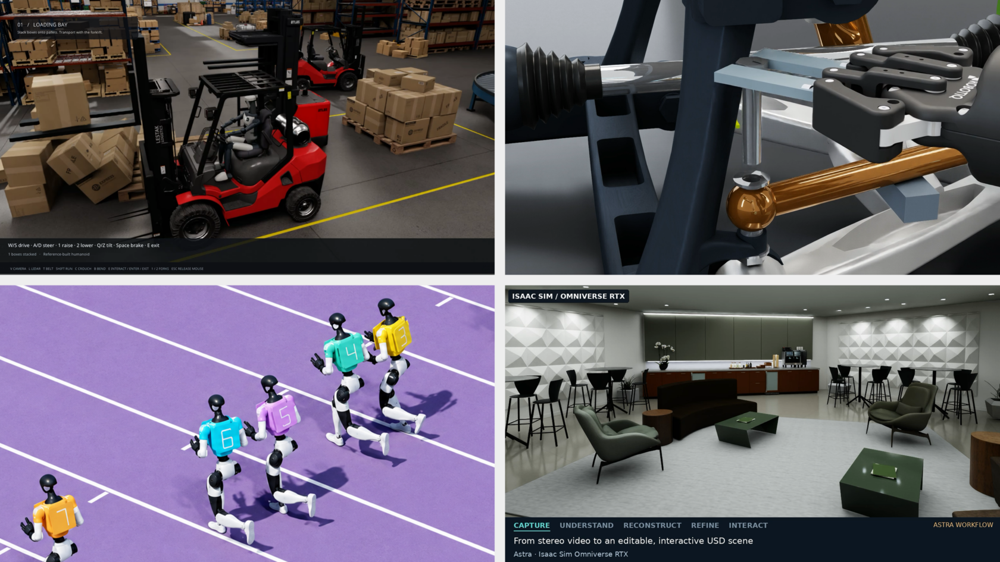

NVIDIA рассказала, как разработчики соединяют frontier-модели с библиотеками NVIDIA Omniverse, чтобы превращать идею в работающую симуляцию. Схема одна и та же: человек формулирует задачу обычными словами, ИИ-агент собирает ассеты, подключает физику и рендер, а разработчик проверяет результат и направляет правки. Сами библиотечные возможности — GPU-ускоренная физика, рендеринг и симуляция сенсоров — остаются за Omniverse, агент выступает «прорабом».
Старший технический художник команды NVIDIA BondLab Ник Скарчелла с помощью агентов (преимущественно Claude и GPT-6 Astra) воссоздал портативный синтезатор OP-1 по продуктовым фотографиям, инструкциям и техническим указаниям: модель экспортировали в формат OpenUSD, проверили в Houdini и Blender, а материалы и свет доработали для рендера через библиотеку ovrtx. В другом эксперименте команда собрала визуализацию «Echos»: полупрозрачные копии роботизированной кисти из Isaac Sim накладываются друг на друга, показывая процесс обучения робота.
Менеджер NVIDIA по продуктам OpenUSD Йенс Йебенс направил агента смоделировать подвеску автомобиля в облачном CAD PTC Onshape и настроить её в Isaac Sim. По обратной связи от симуляции агент переделал инструмент — ключ подобрали так, чтобы он доставал до болтов, — и в симуляции деталь подвески была успешно снята роботом. Стартап Sensori через SimReady Publisher от Onshape переносит своего робота Yuri в Isaac Sim вместе с геометрией, шарнирами и конфигурацией — теперь дизайны оценивают без пересборки модели симуляции каждый раз.
Ещё в июле NVIDIA расширила Agent Toolkit новыми библиотеками Omniverse — теперь агенты получают готовые инструменты для построения и проверки «симуляционно-готовых» миров. Свежая подборка показывает: связка «агент + OpenUSD + Isaac Sim» уже не демо, а рабочий процесс художников и инженеров. Для робототехники это самый дешёвый способ тысячи раз прогнать сценарий до выхода робота в реальность.